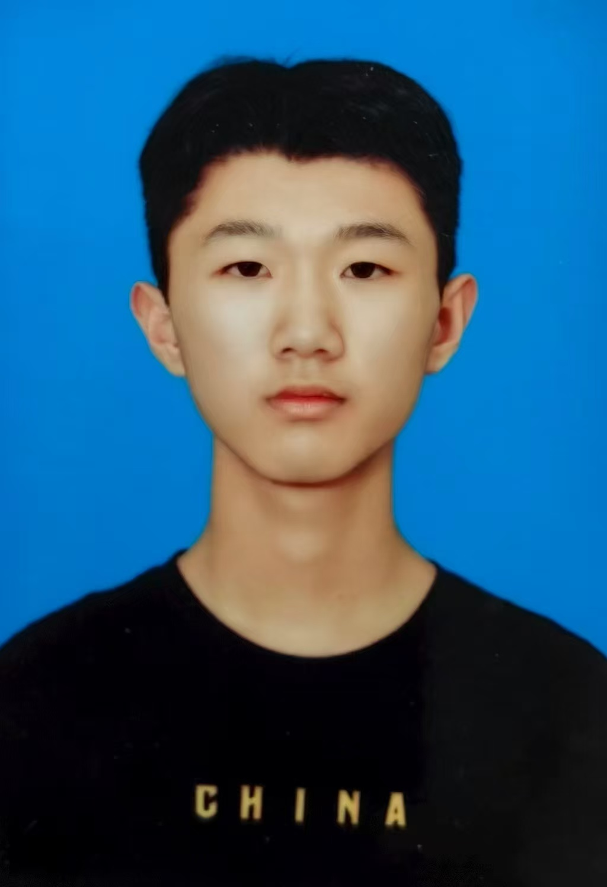

个人简历
基本信息
| 姓名 |
范全政 |
性别 |
男 |
 |
| 出生年月 |
2007.8 |
政治面貌 |
群众 |
| 联系电话 |
18865561281 |
| 电子邮箱 |
1465672303@qq.com |
| 学历 |
鲁东大学 计算机科学与技术专业 2025-2029本科毕业生 |
项目经历
| 软件杯大赛 |
本科组项目: 智能校园管理系统和可视化平台 |
自我评价
作为一名计算机专业本科生，我始终以"技术落地"为导向，在专业学习与实践中不断打磨能力。
我是一个有责任心，有担当，有爱心的人，性格随和，心态积极向上，情绪稳定，正直忠诚
执行力强，耐力较好，对困难能够迎难而上，有较好的沟通个能力与组织协调能力
但效率方面与细心方面还有待提高
兴趣爱好
阅读
写作
打羽毛球
单片机实验
数独
技能证书
校级优秀学生
校级优秀班干部
叶圣陶杯省级一等奖
校级进步之星